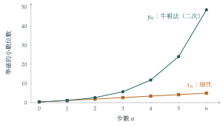

STEP II 2023，第 5 題
繼續之前，請先閱讀題目（原題為英文）。題目載於 OCR 提供下載的 2023 年 STEP 試卷（zip 檔案）內的 STEP II 試卷： www.ocr.org.uk/Images/707102-2023-past-papers.zip
引子
有兩個求 \(\sqrt2\) 近似值的簡單方法，同樣由 \(1\) 開始，同樣只用加法、乘法和除法。十步之後，第一個方法準確至小數點後約 \(8\) 位，第二個方法則準確至超過 \(700\) 位。
兩者的分別，並不在於第二個方法對付 \(\sqrt2\) 的手法較為高明，而在於誤差的形態不同：第一個方法每走一步，誤差乘以一個固定的分數；第二個方法每走一步，誤差就被平方一次。這道題目把這一點說得精確，同時引入數值分析（numerical analysis）的一個核心概念；每一部計算機、每一次天氣預報、每一個工程模擬，背後都是這門學科。
動筆之前
先以分數形式計算兩個數列（sequence）的首幾項。 \[x_n: \quad 1,\; \frac32,\; \frac75,\; \frac{17}{12},\; \frac{41}{29},\; \frac{99}{70},\; \ldots \qquad y_n: \quad 1,\; \frac32,\; \frac{17}{12},\; \frac{577}{408},\; \frac{665857}{470832},\; \ldots\]
你留意到這兩列數有甚麼特別嗎？（看看哪些分數在兩列中都有出現。）
每一個 \(y_n\) 都在 \(x\) 的那一列中出現，只是位置愈來愈後：\(y_2 = x_3\)，\(y_3 = x_7\)，一般而言 \(y_n = x_{2^n - 1}\)。第二個方法其實是在同一列近似值之中，以指數速度向前跳。請記住這一點，我們會在本節末解釋。
逐步解題
階段 1 第一個方法的各項不小於 1
我們可以寫成 \(x_{n+1} = 1 + \dfrac{1}{x_n + 1}\)。若 \(x_n \geq 1\)，則 \(x_n + 1 > 0\)，所以 \(x_{n+1} > 1\)。由於 \(x_0 = 1\)，由歸納法（induction）可知對所有 \(n\) 都有 \(x_n \geq 1\)。■
階段 2 第一個方法的誤差
題目以 \(x_n^2 - 2\) 而不是 \(x_n - \sqrt2\) 來量度誤差。試把 \(x_{n+1}^2 - 2\) 寫成以 \(x_n\) 表示的單一分數。分子有甚麼特別之處？
\[x_{n+1}^2 - 2 = \frac{(x_n + 2)^2 - 2(x_n + 1)^2}{(x_n + 1)^2} = \frac{x_n^2 + 4x_n + 4 - 2x_n^2 - 4x_n - 2}{(x_n + 1)^2} = \frac{2 - x_n^2}{(x_n + 1)^2}.\] 分子正好是 \(-(x_n^2 - 2)\)。所以 \(x_{n+1}^2 - 2\) 與 \(x_n^2 - 2\) 異號（近似值交替落在 \(\sqrt2\) 的兩側），而且由 \(x_n \geq 1\) 可得 \((x_n + 1)^2 \geq 4\)，因此 \[\bigl|x_{n+1}^2 - 2\bigr| = \frac{|x_n^2 - 2|}{(x_n + 1)^2} \leq \frac14\bigl|x_n^2 - 2\bigr|. \qed\]
階段 3 十步之後
把上式連續應用十次，得 \(|x_{10}^2 - 2| \leq 4^{-10}|x_0^2 - 2| = 4^{-10} = \frac{1}{1048576} < 10^{-6}\)。至於正負號：\(x_0^2 - 2 = -1 < 0\)，而正負號逐項交替，所以對每個偶數 \(n\) 都有 \(x_n^2 - 2 < 0\)。於是 \(x_{10}^2 < 2\)，兩者合起來便得 \(2 - 10^{-6} \leq x_{10}^2 \leq 2\)。■
\(x_n^2\) 的誤差每一步最多乘以 \(\frac14\)。這稱為線性收斂（linear convergence）：每一步增加固定數目的準確位數（這裏最少是 \(\log_{10} 4 \approx 0.6\)；實際上較接近 \(0.77\)）。
階段 4 第二個方法的誤差
試把 \(y_{n+1} - \sqrt2\) 寫成單一分數。分子應該會令你想起完全平方。
\[y_{n+1} - \sqrt2 = \frac{y_n^2 + 2 - 2\sqrt2\, y_n}{2y_n} = \frac{\bigl(y_n - \sqrt2\bigr)^2}{2y_n}. \qed\] 若 \(y_n > 0\)，右方為非負數，所以 \(y_{n+1} \geq \sqrt2 > 1\)。由於 \(y_0 = 1\)，由歸納法可知對所有 \(n\) 都有 \(y_n \geq 1\)。■ （事實上，對所有 \(n \geq 1\) 都有 \(y_n \geq \sqrt2\)：走完第一步之後，第二個方法永遠從上方逼近 \(\sqrt2\)。）
階段 5 把誤差平方
設 \(e_n = y_n - \sqrt2\)，則當 \(n \geq 1\) 時 \(e_n \geq 0\)，而且因為 \(y_n \geq 1\)，有 \(e_{n+1} = \dfrac{e_n^2}{2y_n} \leq \dfrac{e_n^2}{2}\)。
用歸納法證明：當 \(n \geq 1\) 時 \(e_n \leq 2r^{2^n}\)，其中 \(r = \frac{\sqrt2 - 1}{2}\)。請仔細檢查基礎情況。
基礎情況：\(e_1 = \dfrac{(1 - \sqrt2)^2}{2 \cdot 1} = \dfrac{(\sqrt2 - 1)^2}{2}\)，而 \(2r^2 = 2 \cdot \dfrac{(\sqrt2 - 1)^2}{4} = \dfrac{(\sqrt2 - 1)^2}{2}\)。兩者相等，所以基礎情況成立（而且是等式）。
歸納步驟：若 \(e_n \leq 2r^{2^n}\)，則 \[e_{n+1} \leq \frac{e_n^2}{2} \leq \frac{4r^{2^{n+1}}}{2} = 2r^{2^{n+1}}. \qed\]
階段 6 六百位小數
由於 \(\sqrt2 - 1 < \frac12\)，我們有 \(r < \frac14\)，所以 \[0 \leq y_{10} - \sqrt2 \leq 2 \left(\frac14\right)^{2^{10}} = 2 \cdot 2^{-2048} = 2^{-2047}.\] 而 \(2^{10} = 1024 > 10^3\)，所以 \(2^{-2047} < 2^{-2040} = (2^{10})^{-204} < 10^{-612}\)，這當然小於 \(10^{-600}\)。■
回顧
找出誤差的遞推關係。兩部分的做法，都是把新誤差寫成舊誤差的一個精確函數，其餘一切便隨之而來。
線性與二次之別。「新誤差 \(\leq\) 常數 \(\times\) 舊誤差」表示每一步增加固定數目的準確位數。「新誤差 \(\leq\) 常數 \(\times\) (舊誤差)\(^2\)」則表示每一步令準確位數加倍（圖 2.7.1）。
平方量決定正負號。在第 (ii) 部分，走一步之後的誤差是一個平方數除以一個正數，所以永遠不會是負數：迭代從上方逼近。
背後的數學
第二個方法其實是把牛頓法（Newton’s method）應用於 \(f(y) = y^2 - 2\)。牛頓法求 \(f\) 的根的做法，是反覆把猜測值 \(y\) 換成 \(y\) 處的切線與橫軸的交點： \[y_{\text{新}} = y - \frac{f(y)}{f'(y)} = y - \frac{y^2 - 2}{2y} = \frac{y^2 + 2}{2y}.\] 在單根（simple root）\(\alpha\) 附近，由泰勒展開式（Taylor expansion）可知新誤差約為 \(\frac{f''(\alpha)}{2f'(\alpha)} \times (\text{舊誤差})^2\)，這就是牛頓法二次收斂（quadratic convergence）的原因。這個特殊情況，即「取 \(y\) 與 \(2/y\) 的平均值」，古巴比倫人早已知道；一塊約公元前 1700 年的泥板（現稱為 YBC 7289）以 \(60\) 進制給出 \(\sqrt2\) 的值，誤差小於百萬分之一。

不動點及其收斂速度
兩個方法都具有 \(u_{n+1} = g(u_n)\) 的形式，而且 \(g(\sqrt2) = \sqrt2\)，所以 \(\sqrt2\) 是一個不動點（fixed point），正如 第 2.2 節 的蛛網圖（cobweb diagram）所示。在不動點 \(\alpha\) 附近，誤差每一步大約乘以 \(g'(\alpha)\)。對第一個方法而言，\(g(x) = \frac{x+2}{x+1}\)，而 \(g'(\sqrt2) = -\frac{1}{(\sqrt2+1)^2} = -(3 - 2\sqrt2) \approx -0.17\)：負號解釋了正負號為何交替，\(0.17\) 則解釋了每一步為何增加 \(0.77\) 位（\(\log_{10}(1/0.17) \approx 0.77\)）。對牛頓法而言，\(g'(\alpha) = 0\)，所以線性項消失，誤差由下一項（即平方項）決定。設計出滿足 \(g'(\alpha) = 0\) 的迭代（iteration），正是快速數值方法的精髓所在。
為何出現相同的分數
分數 \(x_n = p_n/q_n\) 滿足 \(p_{n+1} = p_n + 2q_n\) 和 \(q_{n+1} = p_n + q_n\)，並且 \(p_n^2 - 2q_n^2 = \pm 1\)，正負交替。它們是佩爾方程（Pell’s equation）\(p^2 - 2q^2 = \pm1\) 的解，也是連分數（continued fraction）\(\sqrt2 = [1; 2, 2, 2, \ldots]\) 的漸近分數（convergents）。它們來自 \(1 + \sqrt2\) 的冪：\(p_n + q_n\sqrt2 = (1 + \sqrt2)^{n+1}\)。牛頓法的每一步把 \(p + q\sqrt2\) 平方（不妨一試：\((p + q\sqrt2)^2 = p^2 + 2q^2 + 2pq\sqrt2\)，而 \(\frac{p^2 + 2q^2}{2pq}\) 正是把牛頓法的公式應用於 \(p/q\) 的結果）。平方令指數加倍，這就是 \(y_n = x_{2^n - 1}\) 的原因。同樣的「平方」模式，也是 第 2.8 節 中迭代的動力來源。
思維技巧
要了解一個近似方法的表現，就寫下某一步的誤差如何取決於上一步的誤差。
這是數值分析的起點。兩個方法的答案本身（\(\sqrt2\)）是一樣的；不同之處，亦是實際應用中最要緊之處，在於誤差如何演變。
延伸練習
佩爾方程。證明：若 \(y_n = p/q\) 為最簡分數，且 \(p^2 - 2q^2 = 1\)，則 \(y_{n+1} = \dfrac{p^2 + 2q^2}{2pq}\) 亦滿足這個方程。驗證 \(577^2 - 2 \times 408^2 = 1\)。
立方根。寫出應用於 \(f(y) = y^3 - 2\) 的牛頓法，並證明新誤差為 \(\dfrac{(y_n - \alpha)^2 (2y_n + \alpha)}{3y_n^2}\)，其中 \(\alpha = \sqrt[3]2\)。由此推出：若 \(y_n > \alpha\)，則新誤差最多是舊誤差平方的 \(\frac{1}{\alpha}\) 倍。（提示：利用 \(\alpha^3 = 2\)。）
不用除法的除法。證明應用於 \(f(y) = \frac1y - a\) 的牛頓法給出 \(y_{n+1} = y_n(2 - a y_n)\)，當中無需除法。若 \(e_n = 1 - a y_n\)，證明 \(e_{n+1} = e_n^2\)。（電腦處理器正是用這類迭代來做除法的。）
牛頓法失效的時候。把牛頓法應用於 \(f(y) = y^{1/3}\)，它唯一的根是 \(0\)。證明無論從哪裏開始，每一步都令與根的距離加倍。誤差公式的哪一個假設不成立？
延伸閱讀
Endre Süli & David Mayers, An Introduction to Numerical Analysis（Cambridge University Press）。標準的大學本科數值分析教科書；第 1 章講述不動點迭代和牛頓法。
Nick Higham (ed.), The Princeton Companion to Applied Mathematics（Princeton University Press）。收錄有關牛頓法和數值分析的短文，由專家執筆，面向廣大讀者。
David Fowler & Eleanor Robson, “Square root approximations in Old Babylonian mathematics: YBC 7289 in context”（古巴比倫數學中的平方根近似值），Historia Mathematica 25 (1998)。